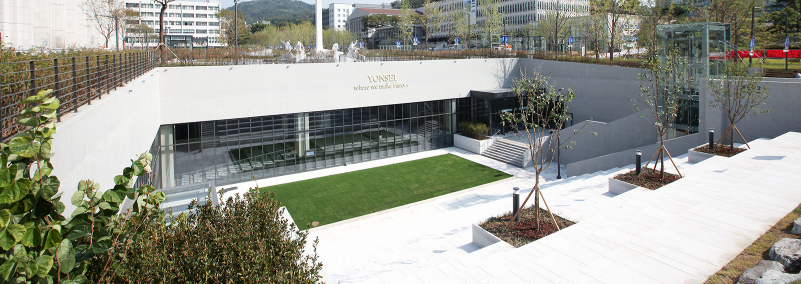

Home
Conference
Committees
Key dates & Deadlines
Call for Papers
Call for Abstracts
Call for Highlights
Register
RECOMB and Satellites
Travel Fellowships
Program
Program Schedule
Keynotes
Poster Guidelines
Venue
Main Conference Venue
Satellites Venue
Hotels
Airport Directions
Things to do in Seoul
Local Transportation
Visa Information
Satellites
RECOMB–Seq
RECOMB–CCB
RECOMB–CG
RECOMB–Genetics
RECOMB–P&E
RECOMB–RSG
RECOMB–Microbiome
Sponsors
RECOMB Sponsors
Sponsorship Packages
About RECOMB
Venue - Satellites
RECOMB 2025 Satellites will be held in
The Commons
of Yonsei University

Transportation to The Commons